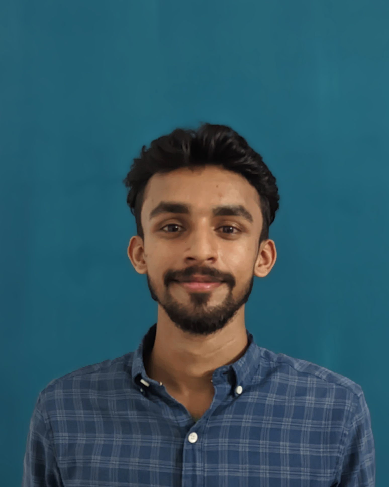

I'm Tinoj, an ECE graduate from Kerala building my first UX case study in the open, alongside four years of embedded-systems thinking. No finished portfolio piece yet. Just real process, honestly shown.

Kerala-based, self-taught in UX, and building my design career in public.
I graduated in Electronics and Communication Engineering from NSS College of Engineering, Palakkad. My final year was spent building and debugging a real embedded IoT system — work that taught me to test assumptions, isolate root causes, and iterate until something actually holds up. I'm now applying that same discipline to product and UX design through the Google UX Design Certificate, one project at a time.
I don't have a polished, finished case study yet, and I'd rather show you real, in-progress thinking than a fake finished one. Below is exactly where I am.
Public toilets in Kerala are often hard to find, and harder to trust. Through a survey, empathy mapping, and a defined persona journey, this project traces exactly where that trust breaks down for the people who need it most — and builds toward a value proposition that addresses it directly.
Primary research through a structured Google Form survey. Synthesized responses into empathy maps to surface what users say, think, feel, and do — and from there, the key pain points driving this problem.
Built three personas — Niva, Priya, and Umadevi — then defined a problem statement, hypothesis statement, and goal statement for the primary persona, Priya. Mapped her end-to-end journey to pinpoint exactly where trust breaks down, and shaped a value proposition from it.
Sketching flows and wireframes around the value proposition and journey map's sharpest pain points.
A testable mid-fidelity prototype, validated against Priya's real needs.
A Google Form survey sent through my personal network, built to surface how women actually decide whether to use — or avoid — a public toilet in Kerala.
Synthesized the survey responses into empathy maps for each participant — mapping what they say, think, feel, and do. That surfaced a clear set of pain points, which shaped the three personas and the journey map that followed for the primary persona.
Navigates public space with a child in tow. Needs to trust a toilet's safety and cleanliness before she'll use it — for herself and her child.
Travels alone and wants to verify cleanliness and safety before walking in, often with no one to ask.
Restricts water intake to avoid needing a public toilet — a habit that led to a urinary infection. Her case reframed this as a health and safety problem, not a convenience one.
Before I had a UX case study, I had this: a real-time power monitoring system I built, debugged, and presented to an academic examiner. I didn't call any of it "design" at the time — but looking back, almost every technical decision was a design decision.
Traced intermittent sensor failures to WiFi/scheduler interference — isolating one variable at a time, the same discipline usability testing demands.
Built a live Chart.js dashboard translating raw sensor readings into something a non-technical person could read at a glance.
Chose the channel and moment a person would actually notice an alert — the core question behind any notification system.
Rewrote faulty state logic after finding a polarity bug — mapping every possible state the same way a flow diagram maps every screen.
Migrated display libraries mid-project and diagnosed a faulty sensor by elimination — shipping despite the constraints, not around them.
Defended every design decision out loud, to someone with no context — the same skill a design review demands.
User research & survey design · Empathy mapping · Persona development · Problem framing & synthesis · Journey mapping · Wireframing & prototyping (in progress via Google UX Design Certificate)
Embedded systems & IoT (ESP32, sensors, RTOS) · Systematic debugging & root-cause analysis · End-to-end builds, hardware to dashboard · Technical documentation
I'm early in this transition and looking for a team willing to invest in that — in exchange for someone who debugs relentlessly and designs honestly.